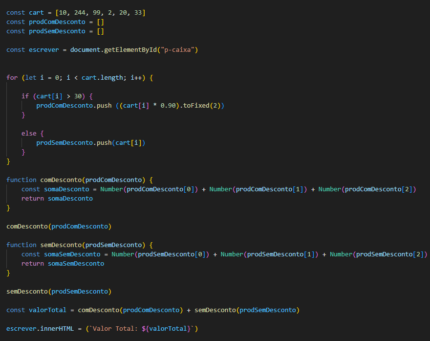

Uma function com parâmetros é uma function que recebe valores como entrada para poder executar uma ação.
Exemplo:
Essa função foi "solicitada" com o parâmetro "Cesar", que foi atribuido a variável "name", e a mesma poderia ser solicitada mais vezes,
com diferentes nomes, exemplo:
Também é possível fazer funções com duas variáveis ou mais, tanto com palavras como com números, exemplo:
Também é possível fazer funções dentro de funções.
É possível fazer uma variável com um valor padrão caso não haja nenhum valor atribuido a ela, isso somente se a variável
estiver vazia, caso atribua um valor a ela este valor padrão será ignorado, também serve para as funções com com mais variáveis, exemplo:
Uma função é um trecho de códigos que é executado quando é chamado, normalmente é uma função do tipo void, ou seja, não retorna nenhum valor, e existe a função que retorna o valor, são as que tem o atributo return no final dos códigos, exemplo:
Se você ver no "inspecionar" na aba "Console" a resposta dessa função será: "undefined resultado" pois para essa variável result funcionar
é preciso que o valor da função seja retornado, exemplo:
Obs: As variáveis dentro da função não são as mesmas variáveis de fora da função, elas são diferentes, não interferem uma na outra.
Resposta:
Usei o for para percorrer os numeros do array(cart), e o if para verificar nesses numeros se o valor era maior que 30;
Depois fiz duas variáveis (prodComDesconto e prodSemDesconto) do tipo array para guardar os valores que iam ser selecionados pelo if e else;
O push serve para adicionar valores a um array, foi ele que adicionou os valores selecionados dentro das variáveis;
Depois usei as functions para somar os valores dentro das variáveis;
A função Number dentro das functions serve para converter os valores em numeros, pois por padrão eles são strings;
Para finalizar criei uma variavel (valorTotal) somando os dois valores, e fiz um inner.HTML para escrever o resultado na tela.
